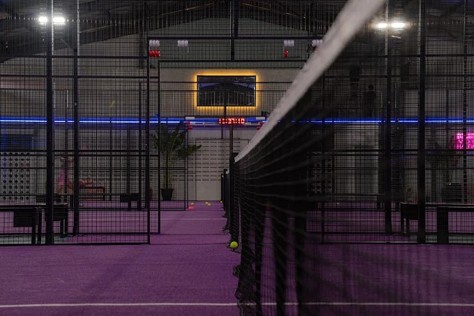

Home / Insights / Padel Court Dimensions & Site Planning
Padel Court Technical Planning Guide
Padel Court Dimensions & Site Planning Guide
A regulation padel court measures 20 × 10 meters internally, but a commercial venue requires more space for structure, access, circulation, drainage, lighting and supporting facilities.
What Are the Official Dimensions of a Padel Court?
A padel court is 20 meters long and 10 meters wide, measured internally. FIP defines it as a completely enclosed rectangle divided into two equal halves by a net. These dimensions describe the inside playing court only. They do not represent the full commercial site footprint needed for structure, access, circulation, drainage or supporting facilities.
Official FIP requirement
20 × 10 m internal court dimensions and at least 6 m of unobstructed clear height throughout the court.
Commercial planning guidance
External structure, access, circulation, foundation, drainage, roof and venue facilities must be planned for the actual site. There is no universal total footprint.
03 · Direct Answers
Padel Court Site Planning: Four Questions Buyers Ask First
These short answers separate the official playing dimensions from the space, engineering and access decisions that determine whether a commercial site is actually workable.
How much space do you need?
The playing court is 20 × 10 m internally, but a commercial site needs additional room for the structure, entrances, circulation, maintenance, drainage and any venue facilities. There is no reliable universal total-site dimension.
Single or multi-court?
Multi-court venues need shared circulation, access, services, drainage and often spectator or social space. Final spacing depends on the operating model, structure, building form and local requirements.
Indoor or outdoor?
Indoor projects must protect clear playing height from beams, lights and building services. Outdoor projects add foundation, drainage, sun, wind and weather exposure to the planning brief.
What changes on a rooftop?
Rooftop projects require additional review of structural load interfaces, anchoring, drainage, access, wind exposure and installation sequencing. Building and local engineering approval are project-specific.
03 · Technical Diagram
Padel Court Dimensions at a Glance
This schematic shows the official internal rectangle, center net, service lines, two court halves and the enclosure context. It is a planning reference rather than a fabrication or foundation drawing.
Dark outline: basic enclosure contextDiagram not for construction or anchoring
04 · Metric & Imperial
Standard Padel Court Dimensions: What Is Fixed?
Measurement
Metric
Imperial
Status
Court length
20 m
65.6 ft
Official internal dimension
Court width
10 m
32.8 ft
Official internal dimension
Court area
200 m²
Approx. 2,153 ft²
Internal playing area
Minimum clear height
6 m
Approx. 19.7 ft
Official FIP minimum
Suggested clear height for new facilities
8 m
Approx. 26.2 ft
FIP suggestion
Conversions are rounded for planning reference. Official FIP rules state measurements in metric units.
05 · Court vs Site Footprint
How Much Site Space Is Actually Needed for a Padel Court?
Commercial projects also need room for the structural frame, entrances, player circulation, court-to-court clearance, spectator or waiting areas, maintenance access, drainage, lighting, reception, changing rooms, storage and emergency access where required.
Do not calculate a commercial padel facility using only the 20 × 10 m playing area.
The final footprint depends on the court system, venue design, operational plan, foundation, roof strategy and local requirements. SPORTENVO does not apply one unsupported total-site figure to every project.
FIP requires at least 6 m of clear height throughout the court, with no obstruction in that volume. For new facilities, FIP suggests 8 m minimum free height. The 8 m value is a recommendation for new projects, while 6 m is the stated minimum.
6 mOfficial FIP minimum
8 mSuggested for new facilities
Height affects lob play and must be coordinated with lighting, beams, HVAC equipment, roof structure, sprinklers and other mechanical services. A building’s nominal ceiling height is not sufficient if any component intrudes into the required clear playing volume. If your lowest point is around 7 m, read Is 7m High Enough for an Indoor Padel Court? before committing to the venue.
EW
07 · Outdoor Planning
Outdoor Padel Court Planning: Orientation, Drainage & Exposure
FIP recommends that the longitudinal court axis for outdoor facilities run approximately north-south, admitting a variation between north-northeast and north-northwest. This is a recommendation, not a universal mandatory orientation.
The practical site plan should also consider the local sun path, prevailing wind, drainage direction, neighboring buildings, lighting glare and available property geometry. Where site constraints require another alignment, the design team should assess the effect on play, spectators and operations. For exposed coastal or severe-wind locations, continue with the FORCE-HX high-wind court and high-wind planning guide.
Official orientation wording is paraphrased from the FIP Rules of Padel.
08 · Multi-Court Planning
Single vs Multi-Court Layout: How Does Space Change?
There is no reliable universal site dimension for one, two or four commercial courts. The usable footprint changes with entrances, circulation, structures, operating spaces and local codes. Start with the official internal court size, then build the venue around real access and operational requirements.
1 Court
Single-court site
Court footprint and enclosure
Entrance and player access
Maintenance route
Foundation and drainage
2 Courts
Shared planning
Court-to-court circulation
Shared access points
Lighting and service coordination
Combined drainage strategy
4 Courts
Commercial venue
Central circulation
Spectator and social areas
Reception and changing rooms
Storage and service access
Final multi-court site dimensions depend on the spacing strategy, building layout, structural system, club operating model and local code requirements.
How Much Space Should Be Left Between Padel Courts?
FIP’s internal court dimensions do not create one universal external spacing value for every commercial layout. Court-to-court clearance should be established from the way people, structures and services actually move through the venue.
01 Court entrances and door operation
02 Player and spectator circulation
03 Structural columns and roof supports
04 Cleaning and maintenance access
05 Emergency routes and local codes
06 Lighting, drainage and service zones
A compact layout may prioritize efficient shared access, while a club with events or social areas may require wider circulation. Confirm the spacing through a coordinated site plan rather than an unsupported rule of thumb.
10 · Rooftop Planning
Rooftop Padel Court Planning: What Must Be Reviewed Beyond Court Size?
A rooftop padel project cannot be approved from the 20 × 10 m playing dimensions alone. The existing building, structural load path, anchoring interfaces, drainage, access, wind exposure and installation sequence all need project-specific review.
Structural interfaceConfirm how court and foundation reactions are transferred into the existing building structure.
Loads & anchoringDead loads, wind actions, anchors and support locations must be checked by the project engineering team and local professionals.
DrainageCoordinate roof-deck falls, outlets and water discharge before fixing court and support positions.
Access & liftingComponent delivery, crane or lifting access, roof circulation and installation sequencing can control the practical layout.
Wind exposureElevated sites may experience different wind exposure from ground-level courts; the applicable design basis is project- and location-specific.
Local approvalsBuilding, fire, access and permit requirements depend on the project location and existing structure.
See the Kuala Lumpur rooftop commercial project for a real site-planning reference. SPORTENVO supplied the court system, technical drawings and installation guidance; final building suitability and approvals remain project- and local-engineering specific.
Foundation & Drainage: What Extends Beyond 20 × 10 m?
The court may be 20 × 10 m internally, but slab, foundation and drainage geometry determine the actual construction footprint. Ground conditions and finished levels should be reviewed before court positions are locked.
Slab / FoundationSupport geometry follows the selected system and local engineering.
FlatnessPlaying performance depends on a properly prepared, level base.
Drainage DirectionFalls and discharge routes must be coordinated before construction.
Perimeter / AnchorsEdge zones and anchors can extend outside the internal rectangle.
Modular OptionSelected sites may use an engineered modular steel foundation.
Roof & Clearance Planning: How Does a Roof Change the Site?
A court roof is a separate engineered system. Its dimensions and construction footprint cannot be derived by reusing the 20 × 10 m internal court measurement.
Structural columnsColumn positions can change perimeter clearance and circulation.
Foundation reactionsRoof loads must be included in foundation engineering.
Clear heightThe structure and services must remain outside the playing volume.
DrainageRoof water collection and discharge require dedicated planning.
Span and perimeterThe roof envelope depends on system geometry and site conditions.
Installation accessLifting, assembly and future maintenance need usable access.
It excludes structure, access, circulation, drainage and club facilities.
Ignoring indoor clear height
Nominal building height can be reduced by beams, lights and services.
Forgetting circulation between courts
Entrances, players, spectators and maintenance all need usable routes.
Planning drainage too late
Levels and outlet positions affect foundations and finished surfaces.
Adding a roof after foundation design
Roof columns and loads can require a different structural solution.
Ignoring installation access
Components, lifting equipment and local crews need a workable sequence.
Using generic layouts without local review
Building, fire, accessibility and structural requirements vary by location.
15 · Planning in Real Projects
Rooftop and Indoor Sites: What Real Projects Change
Real venues show why the internal court rectangle is only the starting point. Building interfaces, clear height, access, drainage, circulation and installation sequence shape the final project plan.

Commercial rooftop venue
Kuala Lumpur Project
The rooftop setting required coordination with the existing building interface, structural load considerations, anchoring interfaces, component access, drainage, wind exposure and the site-specific installation sequence. The project page records SPORTENVO court-system supply, technical drawings and installation guidance; final building suitability remains project- and local-engineering specific.
The existing hall footprint, clear-height structure, multi-court layout, spectator circulation, social area and local installation coordination influenced venue integration.
The official internal dimensions of a padel court are 20 meters long by 10 meters wide. FIP describes the court as a rectangle measured from the inside and divided in half by a net. The court is completely enclosed. These measurements define the playing court; they do not include structural supports, external circulation, drainage, spectator space or other areas required by a commercial venue.
How big is a padel court in feet?
A 20 × 10 meter padel court is approximately 65.6 feet long by 32.8 feet wide. Its internal playing area is 200 square meters, or approximately 2,153 square feet. These conversions describe the enclosed playing court only. A complete project site must also accommodate access, circulation, foundation geometry, drainage and any supporting club facilities.
How much space is needed around a padel court?
There is no single universal perimeter allowance for every padel project. Additional space should be planned around entrances, player circulation, maintenance access, structural columns, drainage, spectator movement and emergency routes required by local codes. Roof supports, existing buildings and the selected court system can also change the footprint. Confirm the final clearance through a project layout and local engineering review.
How high does an indoor padel court need to be?
FIP rules require a minimum clear height of 6 meters throughout the court, with no obstructing elements in that volume. For new facilities, FIP suggests a minimum free height of 8 meters. Building beams, lighting, HVAC equipment, sprinklers and other services must be coordinated so they do not intrude into the clear playing space.
Is 6 meters high enough for padel?
Six meters is the FIP minimum clear height throughout the court, so it is the regulatory threshold stated in the rules. It should still be evaluated against the intended standard of play and every overhead obstruction. A venue with nominal six-meter building height may provide less usable clearance once beams, lights, ducts or sprinklers are considered.
Why is 8 meters recommended for new padel facilities?
FIP suggests 8 meters of minimum free height for new facilities because additional clear volume better accommodates high lobs and allows lighting and building services to be coordinated outside the playing space. It is a recommendation for new facilities, not a replacement for the stated 6-meter minimum. Final building design must also satisfy local structural, fire and mechanical requirements.
How much space is needed for two padel courts?
Two courts require more than two 20 × 10 meter rectangles. The layout must include court-to-court circulation, entrances, shared access, lighting and service routes, drainage and any spectator or waiting space. Structural columns and roof geometry can change the arrangement. Because these variables differ by site, the final two-court footprint should be established through a coordinated layout rather than a universal dimension.
How much space is needed for four padel courts?
A four-court venue should be planned as a commercial facility rather than four isolated court footprints. The plan may need central circulation, reception, changing facilities, social or spectator areas, storage, service access, drainage and emergency routes. Indoor buildings and roofs add structural constraints. Final dimensions depend on the spacing strategy, operating model, building form and local code requirements.
What direction should an outdoor padel court face?
FIP recommends that the longitudinal axis of an outdoor court run approximately north-south, allowing variation between north-northeast and north-northwest. This is a recommendation rather than a universal mandate. A site plan should also consider local sun path, prevailing wind, neighboring buildings, lighting glare, drainage falls and the geometry of the available property.
Does a padel court need drainage?
Outdoor padel projects need a drainage strategy so surface and roof water do not collect around the playing system or foundation. The solution depends on site levels, ground conditions, local rainfall, surface construction and discharge requirements. Drainage direction, perimeter channels and outlet locations should be coordinated before the slab, foundation and court positions are finalized.
Does the foundation extend beyond the 20 × 10 m court?
It can. The 20 × 10 meter figure describes the internal playing court, while slab edges, ring beams, anchor zones or an engineered modular foundation may require geometry outside that rectangle. The actual construction footprint depends on the court system, ground condition, drainage, structural loads and local engineering. Use the supplier’s project drawings and approved foundation design before construction.
Can a roof be added later?
A roof may be possible later, but it should not be assumed. Roof columns, foundation reactions, span, drainage, wind or snow loads, clear height and installation access can affect the original court and foundation layout. Planning the roof strategy before foundation design reduces redesign risk. Any later addition requires a project-specific review by the roof supplier and local engineer.
Official dimension, height and orientation statements are based on the International Padel Federation Rules of Padel. SPORTENVO site-planning guidance remains subject to project conditions and local engineering.
Commercial Project Planning
Turn the official court size into a workable venue plan.
Share the country, site dimensions, court quantity, indoor or outdoor setting, ground condition, roof requirements and access constraints with the SPORTENVO project team.